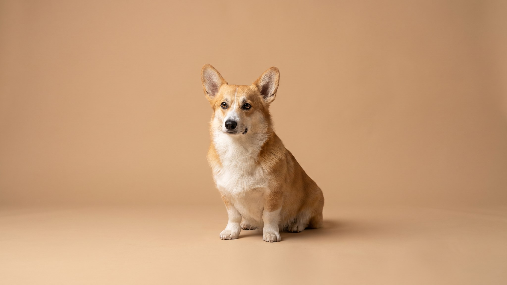

Корги на коротких лапах выглядит комично — но эта собака тысячу лет гоняла скот, уворачиваясь от копыт. Характер под стать: умный, упрямый, мнение имеет о каждом решении хозяина. Пемброк — самая распространённая из двух пород корги, короче корпусом и почти всегда без хвоста. Ниже — что важно знать до того, как завести.
🐾 Ваш питомец — вельш-корги пемброк?
Заведите профиль в AnimaLife: приложение запомнит породу, возраст и вес и будет подсказывать по уходу именно для неё. Вопросы AI-ветеринару — круглосуточно и бесплатно.
Завести профиль → Завести в MAX →
У вас iPhone? AnimaLife есть в App Store
Пемброк — валлийская пастушья порода. Задача: держать стадо в движении, кусая скот за задние ноги. Низкий рост — не недостаток, а инструмент: копыта проходили над головой, а не по ней. Собака работала подвижно и самостоятельно, без постоянных команд пастуха. Этим объясняется и нынешний характер: пемброк думает сам, а не ждёт разрешения.
От кардигана пемброк отличается заметно: короче и компактнее корпус, хвост традиционно купирован или отсутствует от рождения, темперамент чуть живее. Кардиган старше и крупнее — отдельная порода со своим характером.
Пемброк быстро учится — и так же быстро понимает, как обойти правила. Он лает: предупреждает, комментирует, требует. Без работы с голосом с детства лай станет привычкой. Порода хорошо поддаётся обучению, но требует последовательности: мягкие уступки закрепляют нежелательное поведение.
Пемброк — рабочая порода с высокой потребностью в активности. Два выгула в день по 30–40 минут — минимум, не норма. Физической нагрузки недостаточно: нужна умственная. Без неё собака грызёт мебель, скулит и изобретает собственные занятия.
Молодой пемброк (до 1,5 лет) не должен прыгать с высоты и подниматься по крутым лестницам без необходимости — скелет ещё формируется.
Длинный позвоночник при коротких лапах — анатомическая особенность, которая делает пемброка уязвимым к проблемам с дисками. Главные факторы риска: лишний вес и прыжки с высоты. Два-три лишних килограмма для этой собаки — серьёзная нагрузка на позвоночник.
Профилактика проще и дешевле визита к врачу по серьёзному поводу. Обсудите с ветеринаром оптимальный вес и нагрузку для вашего пемброка — особенно после кастрации, когда склонность к набору веса возрастает.
У пемброка двойная шерсть: плотный подшёрсток и более длинная ость. Линяет порода сильно и круглогодично, весной и осенью — особенно интенсивно. Вычёсывание 2–3 раза в неделю снижает количество шерсти на мебели и предотвращает колтуны. Во время линьки — ежедневно.
Купать пемброка достаточно раз в 6–8 недель или по необходимости. Шампунь — специальный для собак с двойной шерстью, тщательная просушка после купания.
Пемброк — хороший выбор для активных людей, готовых тратить время на тренировки и прогулки. Работает с семьёй, одиночками и пожилыми людьми с достаточной активностью.
Порода не подойдёт, если: нет времени на ежедневные тренировки, неудобно много убирать шерсть, хочется тихую собаку без своего мнения, семья с маленькими детьми не готова корректировать пастуший инстинкт.
Материал носит информационный характер и не заменяет очную консультацию ветеринара.
🐾 У вас вельш-корги пемброк?
AnimaLife соберёт уход под породу: к каким болезням есть склонность, что проверять по возрасту, чем кормить и когда пора к врачу. Бесплатно, прямо в мессенджере.
Собрать план ухода → Собрать в MAX →
У вас iPhone? AnimaLife есть в App Store
🐾 Понравился разбор?
Подпишитесь на канал — каждый день разбираем по одному тревожному симптому у кошек и собак: что в пределах нормы, а когда пора к врачу. Подпишитесь, чтобы не пропустить разбор, который может спасти здоровье вашего питомца.